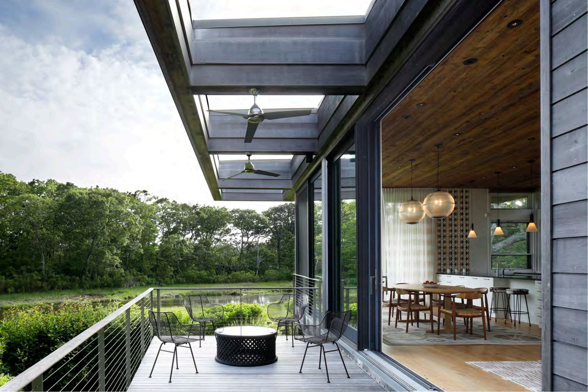
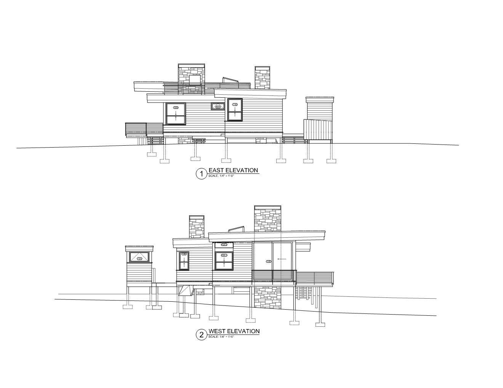
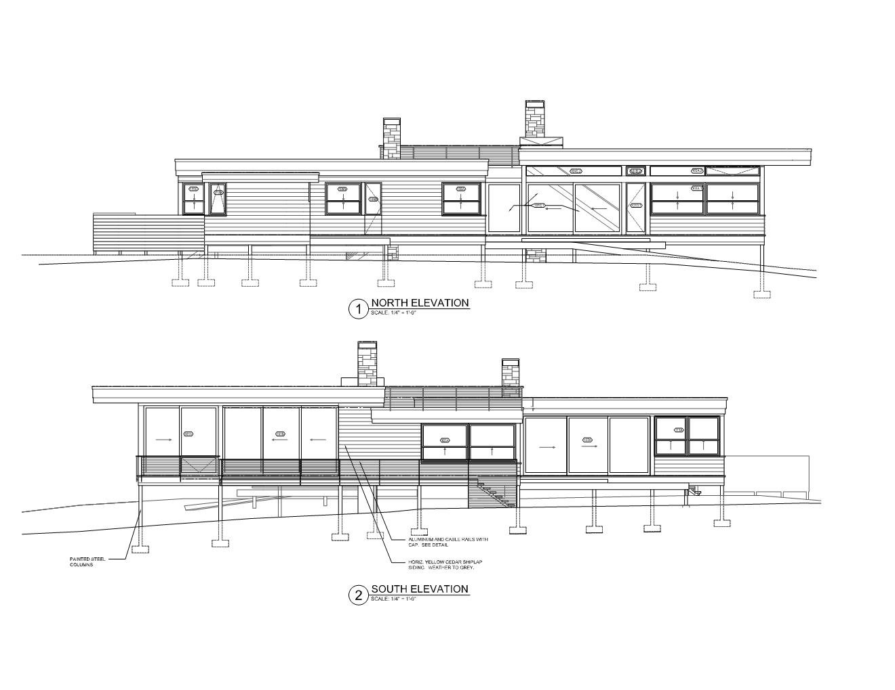
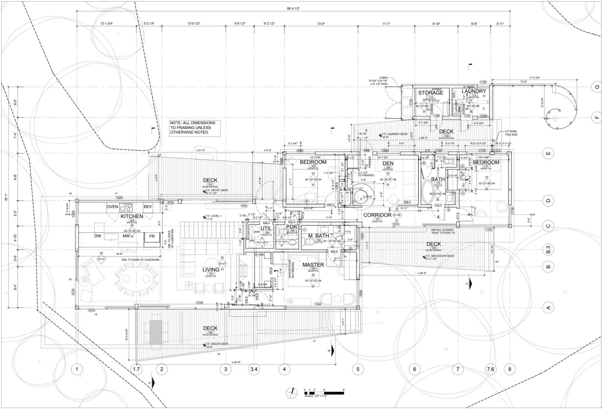
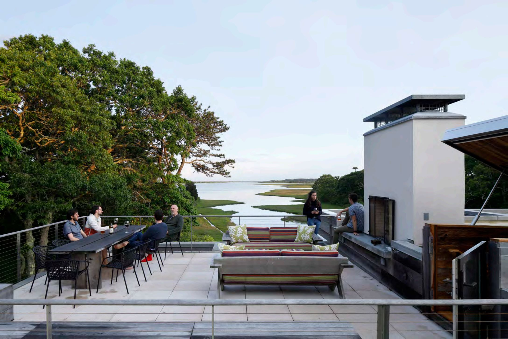
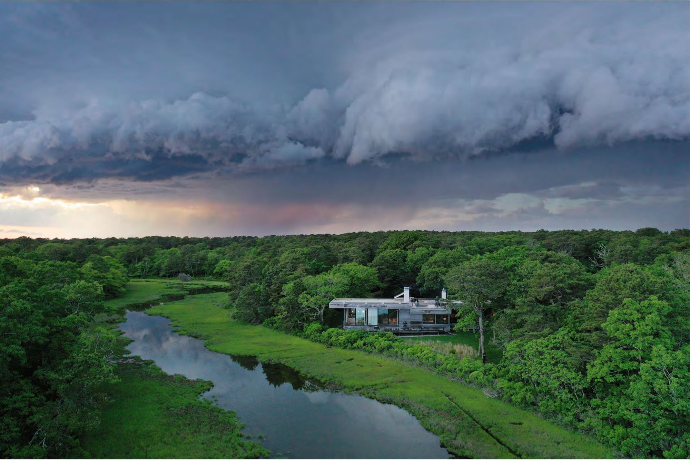

Light on the land, open to the water.
The Pond House aims to provide a stunning perch alongside a wildlife sanctuary — and to minimize its visibility from the surrounding woods and estuary. Its ‘jogged form’ conceals sleeping quarters in a stand of scrub oaks and black gum trees. Untreated Alaskan Yellow Cedar siding is weathering to a pale gray, and the building’s roofs have been designed and engineered for plantings of native grasses and shrubs, further concealing the mass of the buildings within their landscape. Trellises and decks offer outdoor living and blur the boundary between indoors and outdoors.
Within 1,960 square feet, the efficient plan contains spacious gathering areas, three and a half bedrooms, two and a half bathrooms, and spacious storage for remote living.
The building is stilted above the ground plane and can accommodate significant sea-level rise: its steel frame and helical pilings are designed for relocation to higher ground when necessary. Elongated along its east-west axis for passive solar gain, the building employs trellises that shade summer but not winter sun. Larger windows and doors line the southern face of the building, while smaller openings limit northern, eastern, and western exposures.
Conceptual design through construction documentation completed while at Maryann Thompson Architects.









